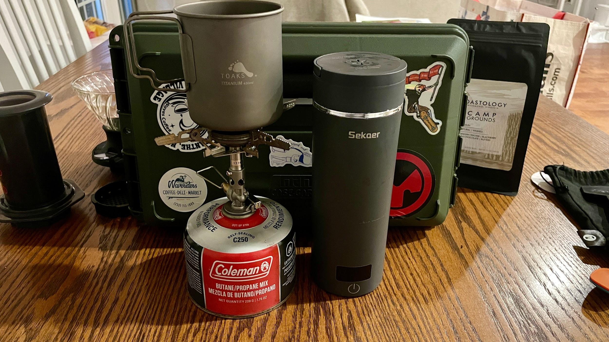
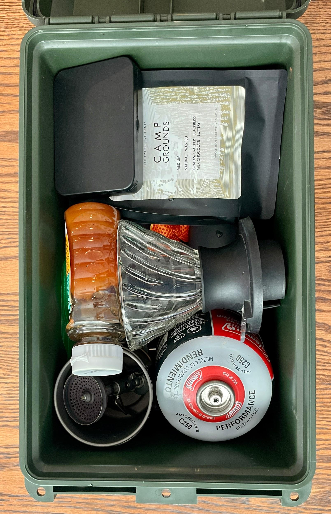
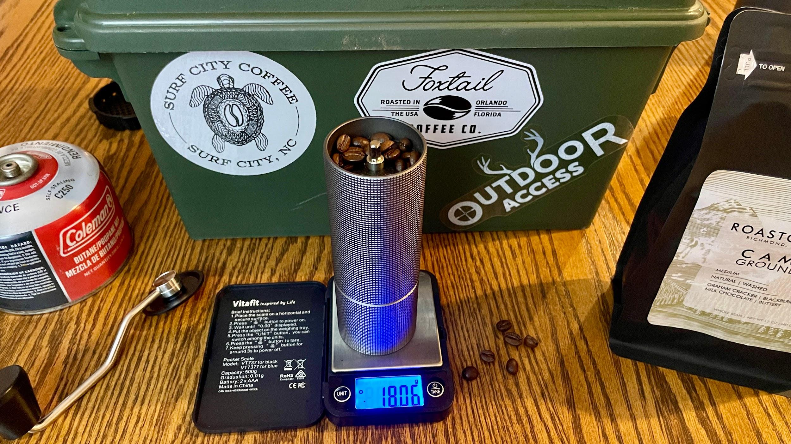
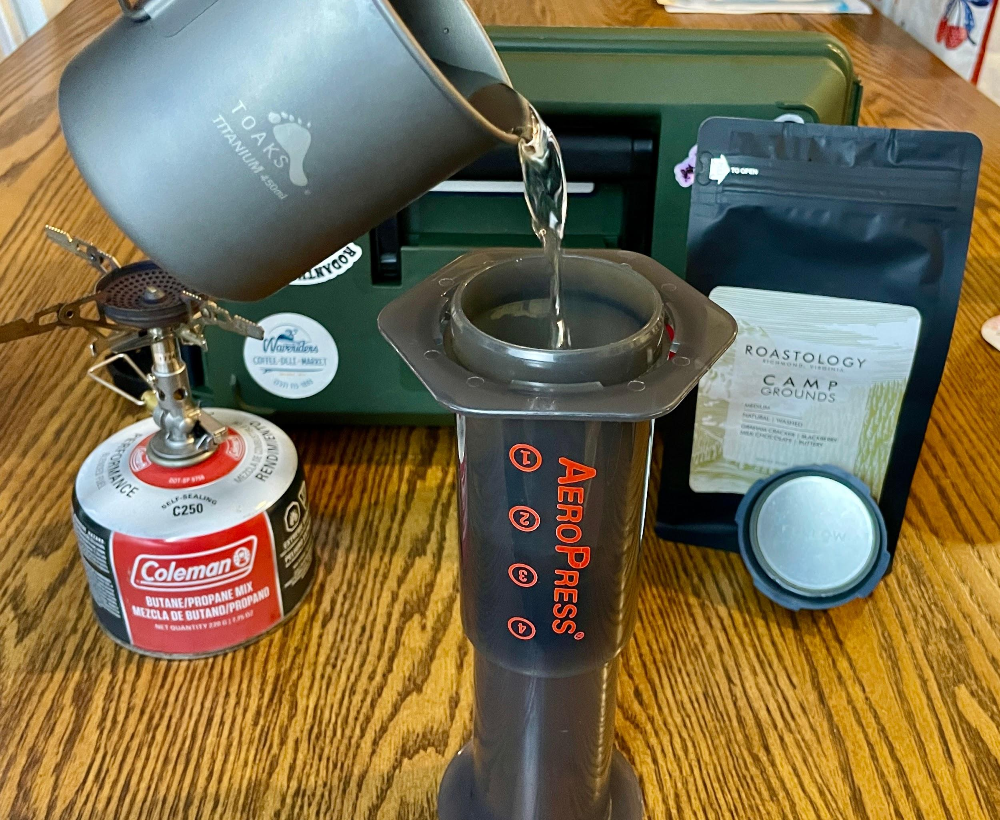

Have you ever checked into a hotel, walked over to the coffee station, and just stared at the Keurig?
If coffee is more than just a commodity to you, if it is something you genuinely enjoy, not just a way to avoid morning brown water, you know the feeling. You want your beloved morning brown water, but you are immediately faced with a series of questions that do not have acceptable answers.
When was this machine last cleaned? Do I really want to drink whatever comes out of it? Can we honestly call that coffee?
Maybe you are not staying in a hotel. Maybe you have rented a cabin or a short-term rental that comes equipped with a generic drip coffee maker that has seen who knows how many guests before you.
Either way, if decent coffee is part of your daily ritual, you are rolling the dice.
My wife and I do the bulk of our traveling during the summer, sprinkled with a few camping trips throughout the rest of the year. Last summer I finally decided I wanted a dedicated coffee setup that could travel anywhere with us. Whether we are in a hotel, a short-term rental, a campsite, or a cabin in the mountains, I wanted to be able to make a consistently good cup of coffee without relying on whatever happened to be sitting on the counter.
Building the Kit
Like any good gear project, it started with the case.
Originally I wanted to build everything inside a Pelican case. They are bombproof and, admittedly, they look incredibly cool.
Then reality set in.
As much as I wanted one, I could not justify Pelican money for what was essentially going to be a portable coffee station. Instead, I settled on an MTM case designed to hold 50 caliber ammunition. It is rugged, seals well, costs a fraction of a Pelican, and just so happens to be almost the perfect size for this project.
Sometimes practical beats tactical.

The Loadout
Inside the case you will find:
- Timemore Chestnut C2 hand grinder
- Budget Amazon digital coffee scale
- TOAKS titanium cup
- Soto camp stove
- Fuel canister
- Sekar electric kettle
- AeroPress
- Standard AeroPress cap with paper filters
- Fellow Prismo attachment
- Small container of honey
- Sugar packets
That still leaves enough room for a fresh bag of coffee beans before snapping the lid shut.
Everything has its place, nothing moves around much during travel, and the entire kit is compact enough to toss into the car without giving it a second thought.

Built to Adapt
The nice thing about this setup is that it is not locked into one configuration.
Depending on where we are headed, I will change up the loadout.
If we are staying somewhere with electricity, I usually leave the titanium mug, camp stove, and fuel canister at home. That opens enough space to pack another brewing method like a Hario Switch or a V60 instead.
If we are camping, the stove goes right back into the case.
It is less of a fixed kit and more of a modular system that changes depending on the trip.
Coffee as Part of the Trip
One unexpected benefit of putting this kit together is how it changed the way we travel.
Whenever my wife and I visit somewhere new, we make a point of finding local coffee shops and independent roasters. It has become part of the experience. Every town has its own personality, and some of our favorite travel memories have started with walking into a small coffee shop we had never heard of before.
Of course, we will order drinks and support the shop while we are there.
But this kit lets us take it one step further.
Instead of just enjoying one cup before moving on, we can buy a bag of freshly roasted beans and continue enjoying that coffee throughout the rest of the trip. Sometimes we will even bring a bag home, and every morning for the next couple of weeks we are reminded of that little shop we discovered while traveling.
It is a better souvenir than a T-shirt, and one that supports local businesses long after we have left town.
Why I Still Prefer Manual Brewing
There are plenty of travel coffee makers on the market today, but I still find myself gravitating toward manual brewing.
A hand grinder never needs charging. The AeroPress is nearly indestructible. The Soto WindMaster stove works almost anywhere.
Whether I am sitting at a picnic table in a campground or making coffee in a hotel room before everyone else wakes up, I know exactly what I am getting every single time.

There is also something satisfying about slowing down for five minutes before the day starts. Grinding fresh beans by hand and brewing a proper cup of coffee becomes part of the morning instead of just another task.

What's Next?
Like any gear setup, this one is always evolving.
The Timemore C2 has been excellent, but I am interested in trying something like the Timemore C5 or even a Comandante to see what a higher-end grinder brings to the table.
I have also been looking at portable electric grinders like the OutIn Fino. As much as I enjoy hand grinding, there are certainly mornings where pushing a button sounds pretty appealing.
And then there is portable espresso.
The OutIn Nano has definitely caught my attention. Being able to pull a respectable shot of espresso while traveling without adding a ton of bulk to the kit is an intriguing prospect.
Will all of those upgrades happen? Probably, eventually.
Half the fun of a kit like this is that it is never really finished.
I probably have more invested in this coffee kit than most people would consider reasonable, and I am okay with that. Every trip starts with coffee, and for me that means more than just getting caffeine in the morning, it means starting the day with something I actually enjoy. Instead of wondering when the hotel coffee maker was last cleaned or settling for stale prepackaged pods, I get to start every morning with freshly ground beans and a brewing method I trust. More importantly, this little case has become part of how we travel. It encourages us to seek out local coffee shops, support independent roasters, and bring a little piece of every destination home with us. For something that fits inside an ammo can, that is a pretty good return on investment.